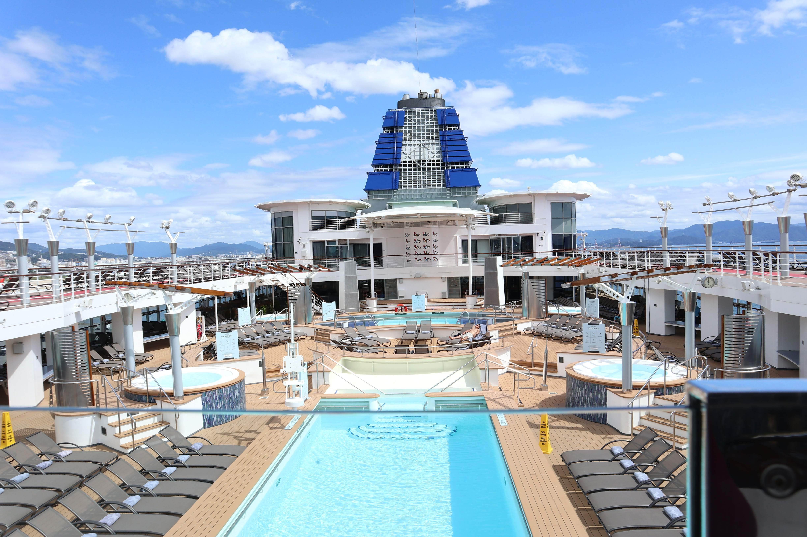
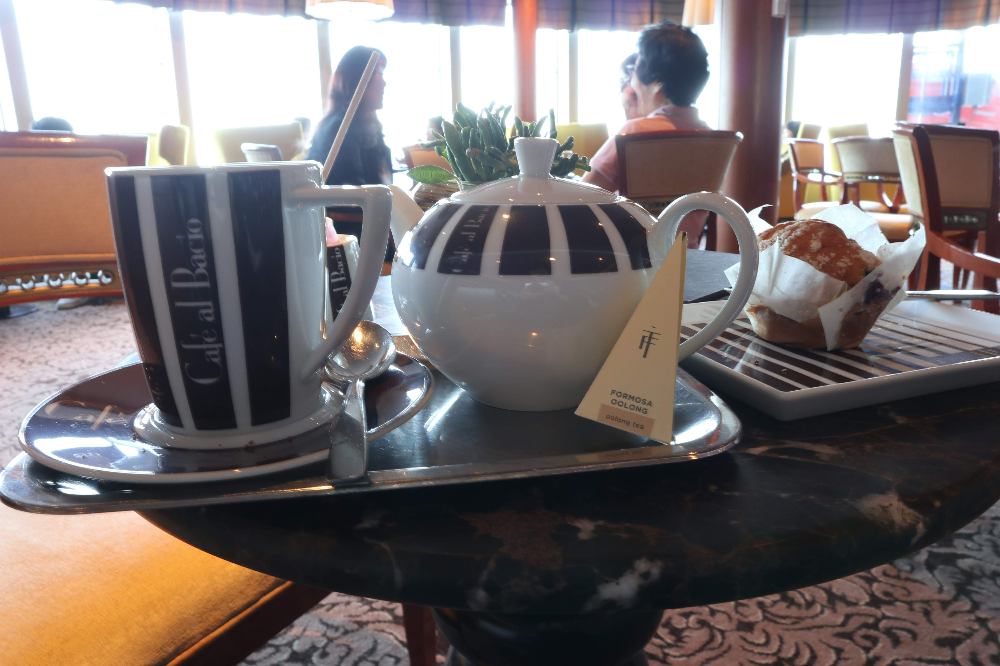
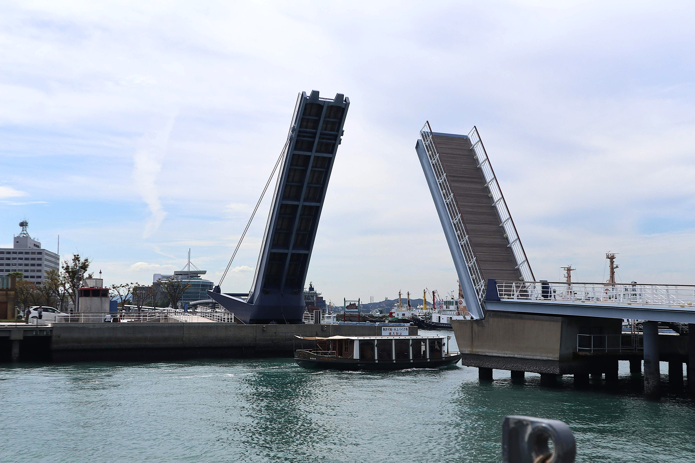
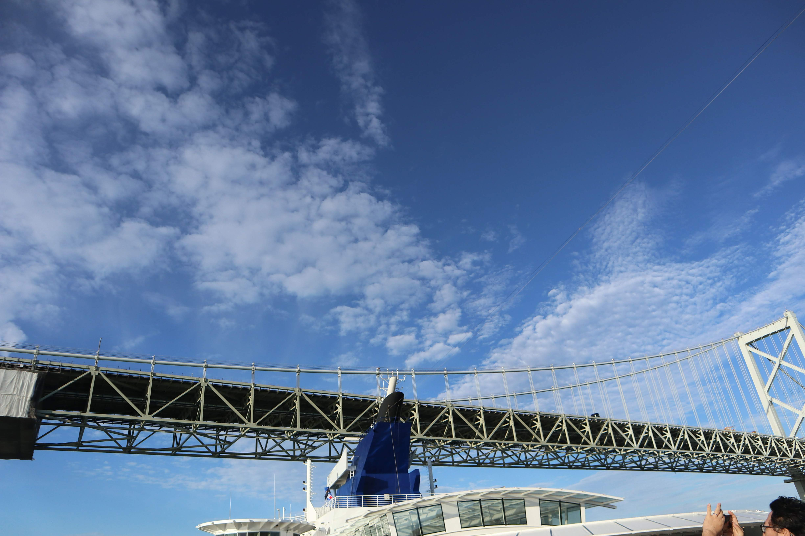
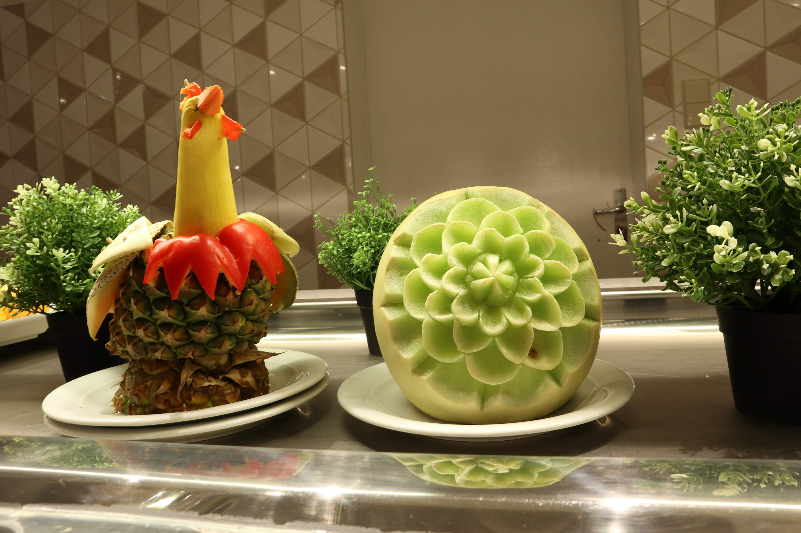
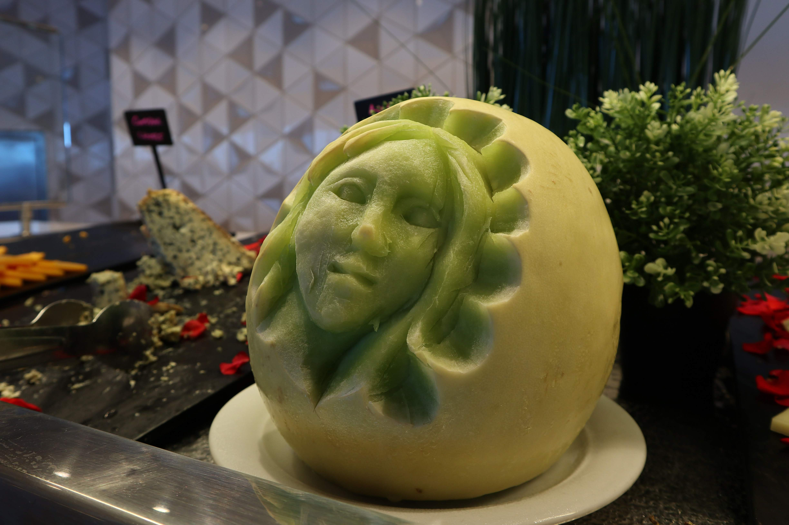
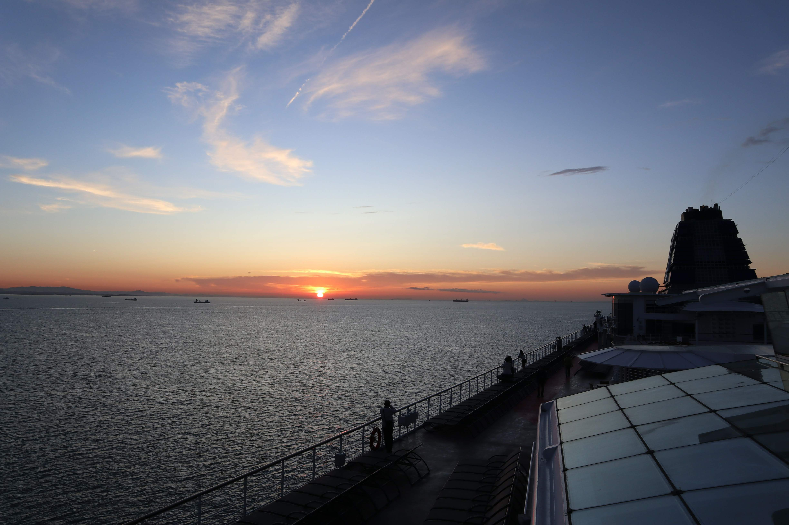

旅行
一人クルーズ旅行よもやま話

行っちゃった行っちゃった。
同僚先輩後輩取引先すべてに拝み倒して、1週間有給取って、クルーズ旅行に！
一人です。何か問題が？
行政のキャンペーンで旅行代金が割引されていたこともあり、一人参加でもかなりお得。ありがとう行政！
航路は、横浜を出発して、広島、北九州、釜山、舞鶴を経由し、金沢へ。
船は外国船で、日本語が話せるスタッフは2名だけ。
英語？できません。ジェスチャーで何とかなるなる！
……って思ってたけど、んな甘い話はない。
ミッションインポッシブル！

とある昼下がり、紅茶を頼んでのんびり読書にいそしんでいたら、「ティー」が通じないとスタッフに泣きつかれた。
その場のおば様みんな揃ってキョトン顔。
「ティー？ナニソレ？」
Oh My God！
どうにかこうにか「ティーっていうのはね、アッサムとかアールグレイとかだよ」と説明して、ようやく注文完了。
ミッションコンプリート！
スタッフに無茶苦茶感謝された。
別日の夜には、ショーのお供にコーヒーを持ち込みたくて、スタッフに「テイクアウト」を頼んだけど、通じない！
持ち帰り、持っていく…英語でなんて言うんだっけ？
半泣きになりながら「コーヒー、withショー、GO！」で何とかミッションコンプリート。
甘かった…語学力ってやっぱり大事…。
「今日はどちらから？」と聞かれて
寄港地の広島で降りたとき、地元メディアから「今日はどちらから？」とマイクを向けられ、「え、船から…」と答えたら、アナウンサー含め、周りに苦笑されたよ。
間違って無くない！？
正解って何よ！？
寄港地では、主に橋を見てきた。
日帰りだし、ツアーは高いし、行ったことがある場所ばかり。
何をしようかと悩んだ末、ピタ●ラスイッチの「そこで橋は考えた」で出てくる可動式の橋を見に行くことにした。
昔、観光で訪れたことはあったけど、橋が可動式だとは知らなかった。
動くタイミングを見計らって、いざレッツゴー！
TVでは見たけど、実際に動くところを見ると感動もひとしお。


いや私は一人でのんびり……なんでも無いです。
旅先で友達ができるのも、旅の醍醐味です、ハイ。
船に戻ってからも楽しみは続く
寄港地から帰ると、スタッフがレモン水やきゅうり水（きゅうり！？）で出迎えてくれたり、おやつには毎回ホールケーキが用意されていたり、あちこちで生演奏をしていたり。
船内も船外もイベント盛りだくさん。


船内をグルグルするだけでも一日が終わってしまうほどで、飽きることがなかった。
1週間のクルーズは、あっという間。

そして帰宅。
早々に風邪をこじらせて寝込んだよ！( ；∀；)
1週間も休みをもらったのに、戻ってきても同僚先輩後輩取引先に迷惑をかけてしまった……。